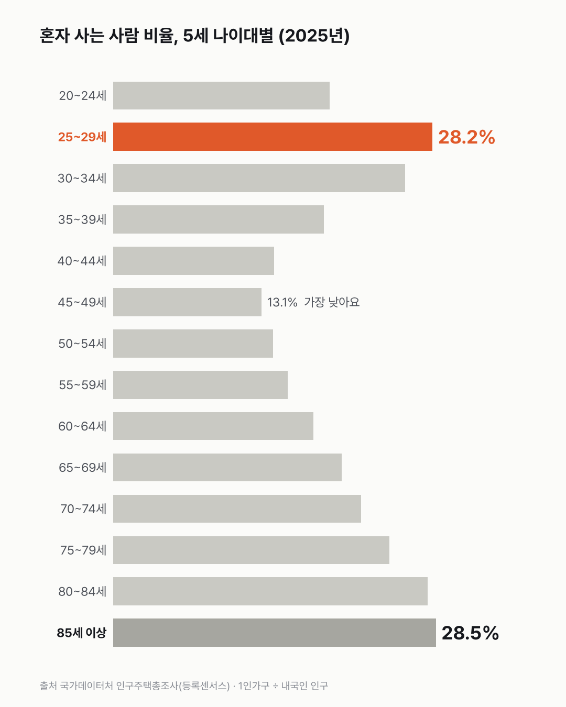
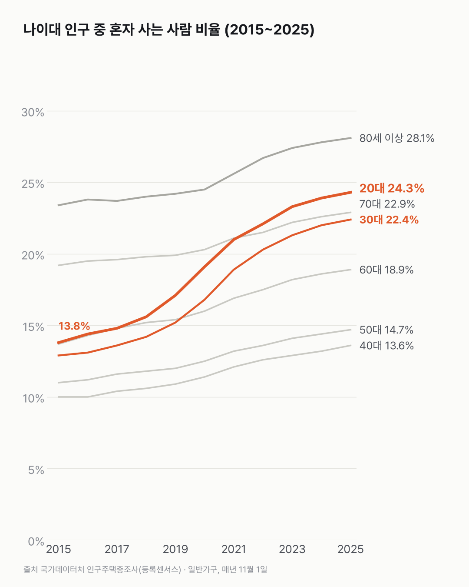
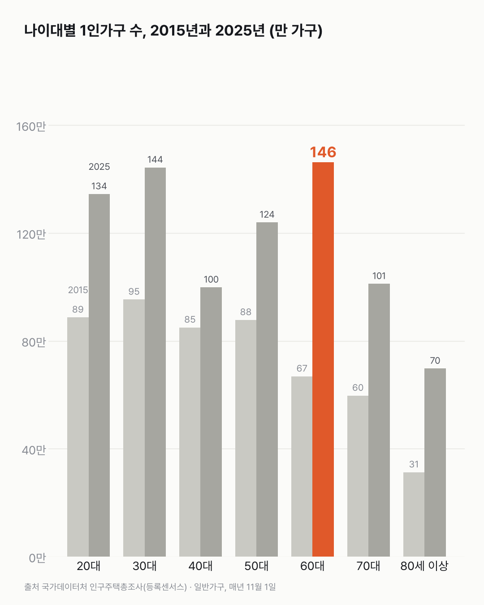

혼자 사는 비율, 20대 후반과 85세 이상이 거의 같아요
혼자 사는 집이라고 하면 어르신 집이 먼저 떠오르기 쉬워요. 비율로 재 보면 20대 후반도 같은 높이에 있어요.

- 2025년 25~29세 중 혼자 사는 사람은 28.2%예요. 85세 이상은 28.5%예요.
- 20대 전체로는 10년 새 13.8%에서 24.3%로 올랐어요. 30대도 12.9%에서 22.4%가 됐어요.
- 20대 인구는 2023년부터 줄었는데, 혼자 사는 비율은 계속 올랐어요.
가장 최근 조사에서 혼자 사는 60대는 146.3만 가구예요. 혼자 사는 20대 134.4만 가구보다 많아요. 그런데 그 나이대 사람 수로 나누면 60대는 18.9%, 20대는 24.3%로 순서가 바뀌어요. 다섯 살 단위로 쪼개면 가장 낮은 건 45~49세(13.1%)이고, 거기서부터 나이가 들수록 다시 올라가더라고요. 양 끝이 높고 가운데가 낮은 모양이에요.
10년 전엔 사정이 달랐어요. 2015년 20대 중 혼자 사는 사람은 13.8%였는데, 2025년엔 24.3%로 넷 중 하나가 됐어요. 30대도 12.9%에서 22.4%로 올랐어요. 두 나이대 다 1.7배가 넘어요. 다른 나이대는 1.2~1.4배였어요.

가장 가파르게 오른 건 2019~2021년이에요. 20대가 17.1%에서 21.0%로 올랐어요. 2년에 3.9%p.
10년 동안 늘어난 크기도 60대가 가장 커요. 혼자 사는 60대는 66.8만 가구에서 79.5만 늘었어요. 물론 그사이 60대 인구도 488만에서 774만으로 늘었어요.

20대에선 숫자 둘이 서로 다른 쪽으로 움직였어요. 혼자 사는 20대는 2023년 140.5만에서 2025년 134.4만으로 줄었어요. 같은 기간 20대 인구는 603만에서 554만으로 더 크게 줄어서, 비율은 계속 올랐어요.
같은 28%라도 두 나이대가 혼자 사는 사정은 전혀 다를 텐데, 이 표엔 그 이유를 적는 칸이 없었어요.
이 숫자는 어디서 왔나요
출처
| 데이터 | 출처 | 쓰임 |
|---|---|---|
| 성 및 연령별 1인가구 (KOSIS DT_1PL1502) | 국가데이터처 「인구주택총조사(등록센서스)」 | 5세 나이대별 1인가구 수 |
| 연령 및 성별 인구 (KOSIS DT_1IN1503) | 같은 조사 | 5세 나이대별 내국인 인구(분모) |
- 혼자 사는 비율 = 1인가구 수 ÷ 그 나이대 내국인 인구. 1인가구 하나에 한 사람이 사니 '그 나이대 사람 중 혼자 사는 사람 비율'에 가깝다.
- 1인가구는 일반가구만 센다(기숙사·사회시설 등 집단가구와 외국인 가구 제외). 분모는 내국인 전체라 집단가구에 사는 사람도 들어 있다 → 근사값.
- 검증: 해마다 나이대별 1인가구 합이 전체 1인가구 수와 같은지 확인했다.
- 교차 확인: 2025년 1인가구 824만 4천 가구(8,244,308)는 보도(일반가구의 36.6%)와 같다. 보도의 '남자 30대 21.8%, 여자 60대 18.6%'는 1인가구 중 그 나이대가 차지하는 몫이라 이 글의 비율(그 나이대 사람 중 혼자 사는 사람)과 기준이 다르다.
- 수집일: 2026-10-29 (KOSIS 오픈API).
- 대표 차트는 2025년 5세 나이대 값(20~24세 ~ 85세 이상 14칸)이에요. '1.7배'는 2025년 비율 ÷ 2015년 비율(20대 24.3 ÷ 13.8, 30대 22.4 ÷ 12.9)이고, '4명 중 1명꼴'은 24.3%를 어림한 거예요.
기준일
매년 11월 1일, 2015~2025년.
한계 4가지
이 데이터로 말할 수 없는 것
- 분모가 근사다. 기숙사·군대·요양시설 등에 사는 사람은 분모에만 들어간다. 20대 초반과 80세 이상은 실제 '혼자 사는 비율'보다 낮게 나올 수 있다.
- 왜 혼자 사는지는 모른다. 독립, 취업, 미혼, 사별, 이혼 등 이유는 이 표에 없다. 2019~2021년 급증의 원인도 이 데이터로 말할 수 없다.
- 전국만 봤다. 지역 차이는 다루지 않는다.
- 좋다 나쁘다를 판단하지 않는다. 패턴만 적었다.
전제 기록
데이터를 보기 전에 적어둔 것, 그리고 보고 나서 바꾼 것
- 전제 기록(premises)(데이터를 받기 전에 작성)를 따랐다. 표 주석에서 1인가구가 외국인 가구를 빼고 센다는 걸 미리 보고 분모를 '내국인'으로 정했다.
질문
20대 후반과 85세 이상. 살아온 시간도, 사는 모습도 전혀 다른 두 나이대예요. 그런데 혼자 사는 비율을 나란히 놓으니 거의 같은 높이였어요. 처음 봤을 땐 믿기지 않았어요. 그래서 나이대를 다섯 살 단위로 쪼개 10년 치를 열어 봤어요.
새 글 나오면 받아 보기
지금은 RSS로 받을 수 있어요. 메일은 아직 준비 중이에요.